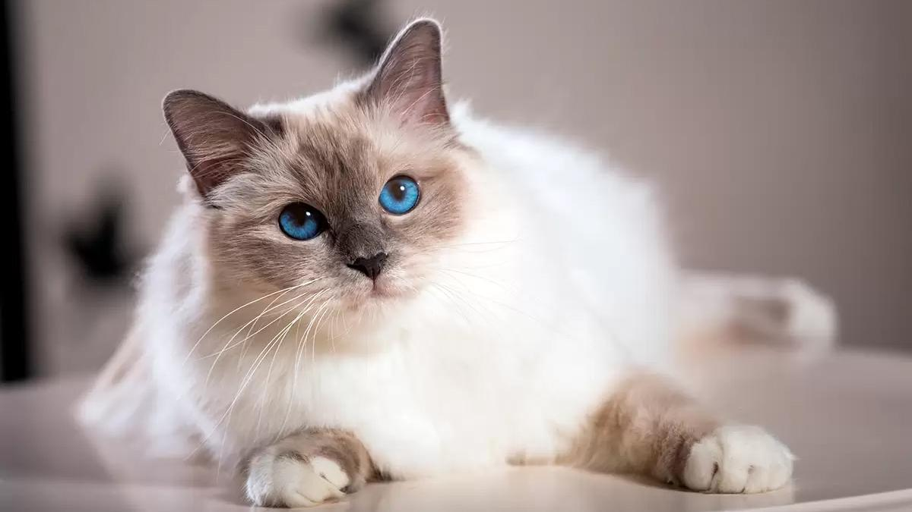

Todo sobre los gatos!
Pese a que en sus h bitos diarios ya incorporan el acicalamiento personal como medida de higiene, hay otra serie de aspectos que debes tener en cuenta que para que se sientan felices y cuidados.

La alimentaci n adecuada
Siempre de calidad y adaptada a sus etapas de vida. Los gatitos tienen necesidades nutricionales distintas a las de los gatos adultos, centradas en fomentar su correcto desarrollo y crecimiento, y adem s el n mero de sus tomas diarias suele ser m s frecuente. A partir del a o, el gato se considera adulto, y suele necesitar alimentos menos cal ricos para evitar el posible sobrepeso, u otras variedades de producto que respondan a un nuevo estadio. En ambos casos, gatitos y adultos, lo m s recomendable es acostumbrarlos a combinar la alimentaci n seca con la h meda (latas o sobres). La alimentaci n h meda de calidad contiene un mayor porcentaje de agua (aproximadamente, un 80% que se traduce en un buen nivel de hidrataci n), y m s prote nas magras. Adem s, la alimentaci n h meda les aporta otros beneficios adicionales, como la variedad (m ltiple combinaci n de ingredientes), y la estimulaci n de su curiosidad sensorial (recetas con texturas para todo tipo de paladares). Agua limpia, en abundancia e idealmente servida en bebederos de acero inoxidable o aluminio. En verano, ubica varios bebederos de estas caracter sticas en distintos lugares de tu casa, para que tu gato siempre tenga agua a mano si quiere beber.
Mantenimiento ptimo del arenero
Adquiere un arenero que se adapte bien a sus dimensiones, sobre todo cuando tu gato ya haya alcanzado su etapa adulta. Col calo en un lugar tranquilo, alejado de la zona de alimentaci n, bebida y relax. Con ayuda de una pala retira sus deposiciones diarias, y cambia la arena con una frecuencia semanal. Cuando desarrolles esta tarea, procede a limpiar el arenero con alg n producto desinfectante lo m s neutro posible y nunca t xico, para evitar que quede alg n rastro que pueda incomodar a tu gato. Aprovecha estas labores para confirmar que el aspecto de las heces de tu gato no muestra ninguna alteraci n por la que debas preocuparte.
U as y patas
Acost mbralo a limarse las u as en un rascador desde que es gatito. sta es la mejor soluci n para que no recurra a hacerlo en sof s, cortinas y muebles. A ade a este aspecto la rutina del corte de u as. Ciertamente, puede ser una labor compleja y estresante para tu gato y para ti, pero en tiendas especializadas en mascotas puedes adquirir tijeras seguras que impedir n que puedas da ar alguno de sus nervios. Si te ves muy apurado, aprovecha una de las visitas al veterinario para que te explique c mo llevar a cabo el corte de u as en las condiciones m s favorables para ambos. Pon especial atenci n en las almohadillas de las patas, sobre todo durante la temporada estival, en la que pueden verse expuestas a quemaduras debido al contacto con superficies excesivamente calientes.
Ejerc talo mediante el juego
No es necesario que le compres un super parque de juego. Con imaginaci n y algunos remedios caseros, puedes construirle elementos que lo incentiven a jugar e interactuar contigo, tales como pelotas de trapo, cajas de cart n con distintos niveles, o premiarle con juguetes tipo ratitas que despertar n sus instintos naturales de caza.
El cepillado
Totalmente imprescindible si tienes un gato con pelo semi largo o largo. Busca aquel momento en el que lo intuyas m s tranquilo y predispuesto al contacto contigo, y aprovecha para convertir la rutina del cepillado en una tarea habitual. En tiendas especializadas en mascotas puedes encontrar la mejor opci n de cepillo para cubrir las caracter sticas de tu gato, teniendo en cuenta que la finalidad es eliminar el exceso de pelo muerto y la consecuente formaci n de nudos o bolas de pelo en el est mago.
Visitas peri dicas al veterinario
No olvides que los gatos, como ocurre con los perros, tambi n necesitan tener su cartilla de vacunas en regla y pasar por los procesos de desparasitaci n (interna y externa). Los veterinarios suelen aprovechar estas visitas para realizarle una exploraci n completa a tu gato, inspeccionando sus o dos, estado de sus dientes, aparici n de posibles masas, estado de la piel, pelo y ojos. Este aspecto, de car cter preventivo, ayudar a que tu gato goce de una salud extraordinaria, y te confirmar que est excelentemente bien cuidado.
